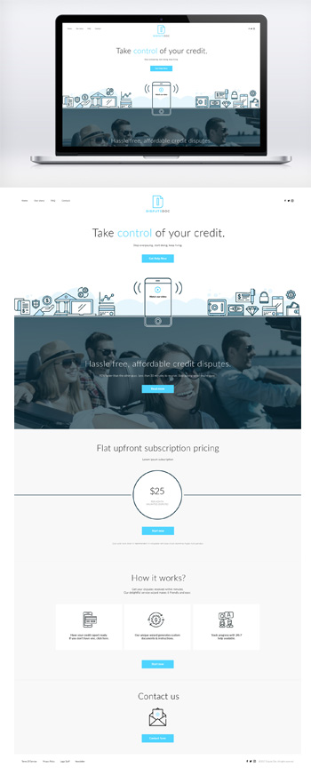

修改
修改-
- 总览
- 岗位职责
- 工作活动
- 掌握知识
- 掌握工具
- 汇报能力
- 管理能力
- 证书和认证
- 相关培训
- 工作经验
- 学历
- 发展方向
总览
平均薪酬 最高薪酬 10-15k 30k - 岗位职责
- 工作活动
- 掌握知识
- 掌握工具
- 汇报能力
- 管理能力
- 证书和认证
- 相关培训
- 工作经验
- 学历
- 发展方向
岗位职责
1、根据公司实际情况和发展规划拟定公司人力资源计划，经批准后组织实施。
2、组织制订公司用工制度、人事管理制度、劳动工资制度、人事档案管理制度、员工手册、培训大纲等规章制度、实施细则和人力资源部工作程序，经批准后组织实施。
3、组织办理员工绩效考核工作并负责审查各项考核、培训结果。
4、审批经人事部核准的过失单和奖励单，并安排执行。
5、负责在公司内外收集有潜力的和所需的人才信息并组织招聘工作。
6、受理员工投诉和员工与公司劳动争议事宜并负责及时解决。
7、了解人力资源部工作情况和相关数据，收集分析公司人事、劳资信息。
8、审批公司员工薪酬表，报总经理核准后转会计部执行。
9、制订人力资源部专业培训计划并协助培训部实施、考核。
10、加强与公司外同行之间的联系。
11、代表公司与政府对口部门和有关社会团体、机构联络。
12、完成总经理临时交办的各项工作任务。工作活动
1、组织建设
参与讨论公司部门级以上组织结构；
确定下级部门的组织结构；
当发现下级部门的岗位设置或岗位分工不合理时，要及时指出问题，作出调整，并通知人力资源部。
2、招聘及任免
A、用人需求
提出直接下级岗位的用人需求，并编写该岗位的岗位职责和任职资格，提交给总经理确认；
确认直接下级提交的用人需求（含岗位职责和任职资格），并提交总经理确认。
B、面试
进行直接下级岗位的初试；
进行直接下级的直接下级岗位复试，并做最后确定；
组织参与面试的人员。
C、不合格员工处理
提出对不合格直接下级的处理建议，提交总经理确认；
确认直接下级提出的对不合格员工的处理建议，提交给人力资源部。
3、培训
提出对直接下级的培训计划，提交总经理确认；
确认直接下级提出的培训计划，提交人力资源部。
4、绩效考评
提出直接下级的绩效考评原则，提交总经理确认；
根据总经理确认的绩效考评原则，与人力资源部经理商讨并确定绩效考评方法；
对直接下级进行考评，并进行考评沟通。将考评结果提交人力资源部。
5、工作沟通
汇总工作报告，并与总经理进行信息沟通，同时将这些信息传递到直接下级；
负责将公司的政策、原则、策略等信息，快速、清晰、准确地传达给直接下级；
确定书面的交互式的工作通报制度，与直接下属进行沟通。
6、激励
提议下级部门和直接下级的激励原则，提交总经理确认；
根据总经理确认的激励原则，与人力资源部经理商讨并确定激励方法。
7经费审核与控制
依据财务制度审批下级部门的各项花费，并确认支出的合理性；
监督并控制下级部门的费用支出，并向总经理进行费用月报。掌握知识
1、有战略管理、战略人力资源管理、组织变革管理、管理能力开发等方面的培训；
2、对现代企业人力资源管理模式有系统的了解和实践，熟悉人力资源日常管理工作流程；对人力资源战略规划、人才的引进、薪酬福利设计、绩效激励考核、员工培训、员工职业生涯设计等方面具有丰富的实践经验；
3、熟悉国家、企业关于合同管理、薪金制度、用人机制、保险福利待遇、培训等方面的法律法规及政策；
4、具备优秀沟通、协调能力，具有较强的语言和文字表达能力；
5、具有解决复杂问题的能力，具备独立工作能力及良好的工作推进能力；
6、很强的激励、沟通、协调、团队领导能力，责任心、事业心强，具备良好的管理能力和决策能力；
7、了解相关政策和法律法规，不断完善人员招聘以及福利待遇等方面的问题。掌握工具
常规办公类软件,PS,AI等
汇报能力
定期将自己的各项工作及下级部门工作以书面的形式向总经理报告管理能力
指导、鼓励、鞭策下级，使下级能努力工作；
有办法提升下级的工作效果和工作效率；
能为下级描绘公司的战略意图和远大前景证书和认证
1、四级人力资源管理师资格证
2、三级人力资源管理师资格证
3、二级人力资源管理师资格证相关培训
培训与开发、绩效管理、薪酬与福利管理、劳动关系管理、劳动经济学、劳动法、现代企业管理、组织行为工作经验
从业时间为5-10年学历
大专，本科，研究生发展方向
专业背景 新媒体艺术设计 年龄 26 学历 本科 工作经验 5年 证书 -- 简历信息 有 -
- 总览
- 游戏UI
- 电商UI
- 网站UI
- 移动端UI
游戏UI是什么？
这是不同的三个分工。UI主要是做游戏操作界面设计的，角色和场景才是真正的游戏美术设计。角色和场景的特点又分别如下：角色顾名思义就是游戏中的人物、动物等活物，场景则是游戏中的环境、机械、道具等死物。从学习的角度来说，角色的起点要求比较高，要求有比较好的美术基础，对人体结构有娴熟的了解，当然还要会用3D软件；场景开始对美术的要求没有那么高，只要熟练运用3D软件就行了。但是角色是越学越容易的，场景刚好相反是学无止尽的。
游戏UI在行业中的需求？
随着时代的发展，游戏UI设计师一直是游戏美术研发中的岗位。游戏UI设计师在过去都是划分到美术部门，2010年之前的端游时代，当时国内自主研发产品不多，而且开发周期长，一个项目基本就1个UI设计师即可。全国上下没有多少位，所以这个岗位一直不被大家所熟知也是很正常的。后期页游与手游的爆发，国内研发真正走上黄金时代，对游戏UI设计师的大规模需求，漫天的招聘，让这个岗位真正从幕后走到前台，让大家所了解与好奇。由于是一个人数较少的岗位，那么在美术高校也不会为此开设相关专业。专业书籍主要是由教师编辑的，因为高校没有专业的老师，这也能解释为什么没有专业书籍的出现了电商UI是什么？
这是不同的三个分工。UI主要是做游戏操作界面设计的，角色和场景才是真正的游戏美术设计。角色和场景的特点又分别如下：角色顾名思义就是游戏中的人物、动物等活物，场景则是游戏中的环境、机械、道具等死物。从学习的角度来说，角色的起点要求比较高，要求有比较好的美术基础，对人体结构有娴熟的了解，当然还要会用3D软件；场景开始对美术的要求没有那么高，只要熟练运用3D软件就行了。但是角色是越学越容易的，场景刚好相反是学无止尽的。
电商UI在行业中的需求？
电商事人们家喻户晓的的一个名词，双十一也成为我们饭后的一个重要话题，电商UI发展至今已经成为一个很重要的职业。网站UI是什么？
网站UI主要负责pc端页面优化，事提升用户体验的一个重要环节，网站UI主要负责pc端页面优化，事提升用户体验的一个重要环节网站UI主要负责pc端页面优化，事提升用户体验的一个重要环节网站UI主要负责pc端页面优化，事提升用户体验的一个重要环节网站UI主要负责pc端页面优化，事提升用户体验的一个重要环节网站UI主要负责pc端页面优化，事提升用户体验的一个重要环节网站UI主要负责pc端页面优化，事提升用户体验的一个重要环节网站UI主要负责pc端页面优化，事提升用户体验的一个重要环节网站UI主要负责pc端页面优化，事提升用户体验的一个重要环节网站UI在行业中的需求？
网站UI在互联网时代扮演重要的角色，网站UI在互联网时代扮演重要的角色，网站UI在互联网时代扮演重要的角色，网站UI在互联网时代扮演重要的角色，网站UI在互联网时代扮演重要的角色，网站UI在互联网时代扮演重要的角色。移动端UI是什么？
移动端UI主要负责pc端页面优化，事提升用户体验的一个重要环节，网站UI主要负责pc端页面优化，事提升用户体验的一个重要环节网站UI主要负责pc端页面优化，事提升用户体验的一个重要环节网站UI主要负责pc端页面优化，事提升用户体验的一个重要环节网站UI主要负责pc端页面优化，事提升用户体验的一个重要环节网站UI主要负责pc端页面优化，事提升用户体验的一个重要环节网站UI主要负责pc端页面优化，事提升用户体验的一个重要环节网站UI主要负责pc端页面优化，事提升用户体验的一个重要环节网站UI主要负责pc端页面优化，事提升用户体验的一个重要环节移动端UI在行业中的需求？
移动端UI在互联网时代扮演重要的角色，移动端UI在互联网时代扮演重要的角色，移动端UI在互联网时代扮演重要的角色，移动端UI在互联网时代扮演重要的角色，移动端UI在互联网时代扮演重要的角色，移动端UI在互联网时代扮演重要的角色。
-
-
没有 UI 就是新的 UI
人人都是产品经理2小时前几个月之前，我曾经在一篇文章中说过 Magic 和 Operator 这样的应用将会成为下一个重大突破。它们的独特之处在于，它们没有采用传统的 UI（用户界面）作为交互方式。相反，这些应用是完全围绕单个消息对话屏幕展开的。
-
视错觉与 UI 元素间的可能
人人都是产品经理2小时前几个月之前，我曾经在一篇文章中说过 Magic 和 Operator 这样的应用将会成为下一个重大突破。它们的独特之处在于，它们没有采用传统的 UI（用户界面）作为交互方式。相反，这些应用是完全围绕单个消息对话屏幕展开的。
-
UI 设计有哪些规范？
人人都是产品经理2小时前几个月之前，我曾经在一篇文章中说过 Magic 和 Operator 这样的应用将会成为下一个重大突破。它们的独特之处在于，它们没有采用传统的 UI（用户界面）作为交互方式。相反，这些应用是完全围绕单个消息对话屏幕展开的。
-
没有 UI 就是新的 UI
人人都是产品经理2小时前几个月之前，我曾经在一篇文章中说过 Magic 和 Operator 这样的应用将会成为下一个重大突破。它们的独特之处在于，它们没有采用传统的 UI（用户界面）作为交互方式。相反，这些应用是完全围绕单个消息对话屏幕展开的。
-
视错觉与 UI 元素间的可能
人人都是产品经理2小时前几个月之前，我曾经在一篇文章中说过 Magic 和 Operator 这样的应用将会成为下一个重大突破。它们的独特之处在于，它们没有采用传统的 UI（用户界面）作为交互方式。相反，这些应用是完全围绕单个消息对话屏幕展开的。
-
UI 设计有哪些规范？
人人都是产品经理2小时前几个月之前，我曾经在一篇文章中说过 Magic 和 Operator 这样的应用将会成为下一个重大突破。它们的独特之处在于，它们没有采用传统的 UI（用户界面）作为交互方式。相反，这些应用是完全围绕单个消息对话屏幕展开的。
-
-
-
中华人民共和国劳动合同法
《全国人民代表大会常务委员会关于修改〈中华人民共和国劳动合同法〉的决定》已由中华人民共和国第十一届全国人民代表大会常务委员会第三十次会议于2012年12月28日通过，现予公布，自2013年7月1日起施现予公布，自2013年7月1日起施现予公布，自2013年7月1日起施自2013年7月1日起施行...
-
中华人民共和国国家勋章和国家荣誉称号法
《中华人民共和国国家勋章和国家荣誉称号法》已由中华人民共和国第十二届全国人民代表大会常务委员会第十八次会议于2015年12月27日通过，现予公布，自2016年1月1日起施。
-
中华人民共和国军人保险法
１９９２年４月３日第七届全国人民代表大会第五次会议通过,根据２００１年１０月２７日第九届全国人民代表大会常务委员会第二十四次会《关于修改〈中华人民共和国工会法〉的决定》修正代表大会常务委员会第二十四代表大会常务委员会第二十四代表大会常务委员会第二十务委员会第二十四...
-
中华人民共和国工会法
《中华人民共和国国家勋章和国家荣誉称号法》已由中华人民共和国第十二届全国人民代表大会常务委员会第十八次会议于2015年12月27日通过，现予公布，自2016年1月1日起施行
-
中华人民共和国劳动合同法
《全国人民代表大会常务委员会关于修改〈中华人民共和国劳动合同法〉的决定》已由中华人民共和国第十一届全国人民代表大会常务委员会第三十次会议于2012年12月28日通过，现予公布，自2013年7月1日起施现予公布，自2013年7月1日起施现予公布，自2013年7月1日起施自2013年7月1日起施行...
-
中华人民共和国工会法
《中华人民共和国国家勋章和国家荣誉称号法》已由中华人民共和国第十二届全国人民代表大会常务委员会第十八次会议于2015年12月27日通过，现予公布，自2016年1月1日起施行
-